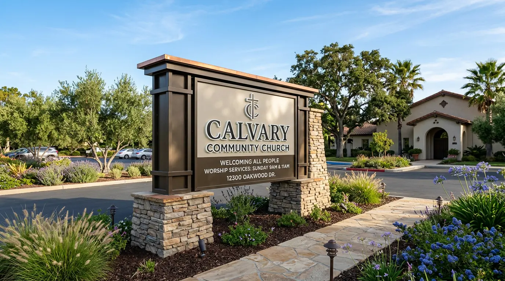
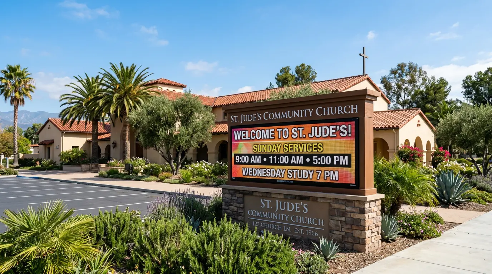
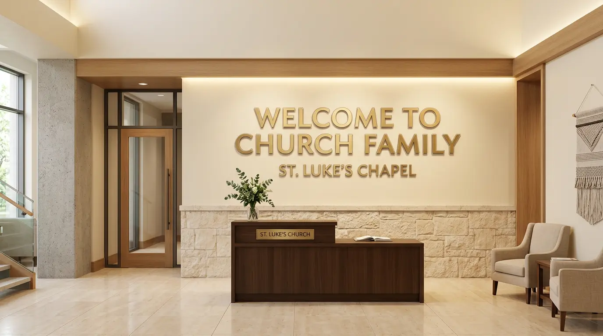
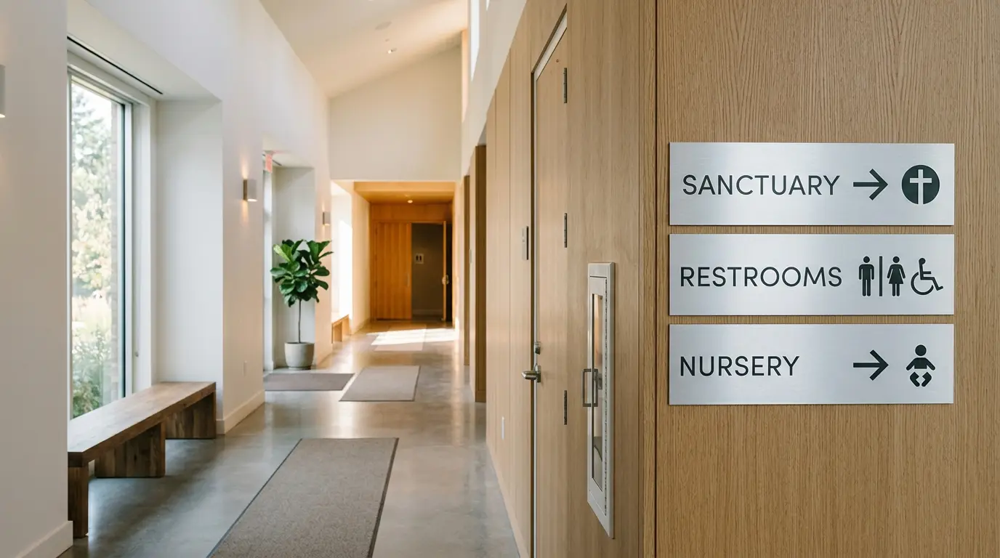
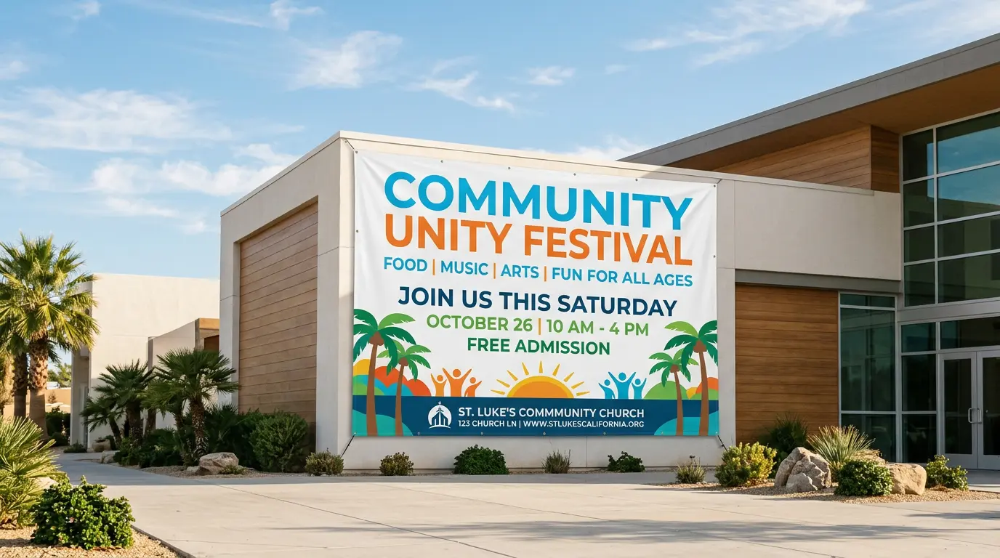
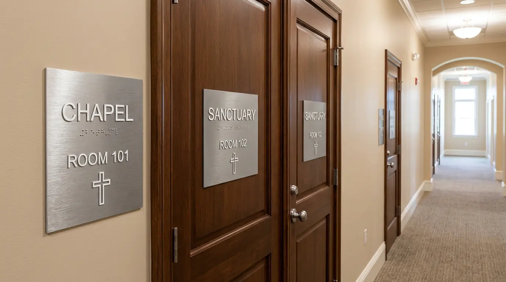

Monument signs, LED message centers, lobby displays, ADA-compliant room ID signs, wayfinding, and vinyl banners for churches and houses of worship across San Jose and Silicon Valley. Full-service design through installation.
A church's sign program covers more ground than most organizations — you need an exterior monument sign visible from the street to attract new visitors, a programmable LED message center to communicate weekly service times and events, interior directional signs so first-time guests can find the sanctuary, nursery, and restrooms without asking for help, and ADA-compliant room ID signs on every permanent room in the building. For churches in older facilities, that last category often hasn't been addressed and is a code requirement under California law.
San Jose is one of the most religiously diverse cities in the country. Korean churches, Vietnamese congregations, Spanish-language ministries, evangelical churches, Catholic parishes, Buddhist temples, Sikh gurdwaras — every one of them has the same core sign needs: be visible from the street, communicate clearly to newcomers, and make the building navigable for anyone who walks in for the first time.
We work with churches across the full budget range — from a single monument sign replacement for a small congregation to a complete sign program covering exterior identification, LED messaging, interior wayfinding, and ADA compliance for a multi-building campus. Non-profit budgets are the norm here, and we price accordingly. And for San Jose churches, there's a grant program worth knowing about.
Monument signs, LED message centers, lobby displays, and interior wayfinding — the complete church sign program.

Monument Sign · Church Entrance
LED Message Center · Service Times
Lobby Sign · Church Foyer
Wayfinding · Interior Directional
Vinyl Banner · Event Promotion
ADA Room ID Signs · Title 24Most churches need several sign types as part of a complete program. We quote and install the full package so everything is consistent in material, finish, and style.
Freestanding ground-mounted signs at your church entrance or driveway — the most important exterior sign your congregation has. Available as illuminated cabinet monuments, non-illuminated masonry-style monuments, or multi-panel structures with changeable copy. Permit handled by us; City of San Jose sign permit required for new installations.
Street-Visible · Permitted · Illuminated OptionsProgrammable LED display panels built into your monument sign or as a standalone roadside sign — update service times, event announcements, scripture passages, and seasonal messages remotely from your phone or computer. Subject to City of San Jose EMC sign regulations; we handle the permit and help you configure the display for your typical messaging needs.
Remote Updates · Service Times · EventsDimensional letters, flat-cut acrylic, or metal lobby signs for your church foyer, welcome center, or main entrance wall. The sign that greets every first-time visitor as they walk in — it communicates that your congregation is organized, welcoming, and takes its space seriously. Available in a range of materials from budget-friendly PVC to premium brushed metal.
Foyer · Welcome Center · ReceptionWall-mounted directional signs guiding visitors to the sanctuary, nursery, children's classrooms, restrooms, fellowship hall, and offices — so newcomers can find their way without interrupting a greeter. Designed as a consistent system in your church's colors and typography. No one should have to guess where they're going on their first visit.
Newcomer-Friendly · Consistent SystemTactile signs with Grade 2 Braille and raised characters for every permanent room in your facility — classrooms, offices, restrooms, nursery, fellowship hall, storage rooms. Required under California Title 24 and federal ADA law for any public accommodation, which includes churches. San Jose Chamber ADA grants may fund a significant portion of this work for eligible congregations.
Required · Title 24 · Grant EligibleFull-color vinyl banners for special events, sermon series, seasonal campaigns, and community outreach — hung on your building exterior, in the sanctuary, or across parking lot poles. Retractable banner stands for lobbies and foyers. A-frame signs for parking lot directionals on Sunday mornings. Fast turnaround, full-color print, UV-stable outdoor materials.
Events · Seasonal · Fast TurnaroundWe understand that churches operate on non-profit budgets, make decisions by committee, and need sign projects to be straightforward. Here's how we make it easy.
The San Jose Chamber ADA grant program can fund up to $25,000 of qualifying accessibility improvements for eligible non-profits and churches in San Jose. We're familiar with the program and can provide the itemized quote and documentation package needed to support your grant application. Ask us about eligibility on your first call — it's worth checking before you budget the project yourself.
Monument signs and LED message centers require a City of San Jose sign permit. LED EMC displays have additional regulations around brightness, animation, and setback. We review your zoning, pull the applicable sign ordinance, and handle the permit submittal — so your sign committee isn't trying to navigate SJPermits.org. We tell you what's achievable at your address before design starts.
Monument sign, LED panel, interior lobby sign, wayfinding, ADA room ID signs, and vinyl banners — all quoted together so your leadership team sees the full picture and can prioritize by budget. We stage the project however works best for your giving calendar. No surprise add-ons, no separate vendors, no coordination overhead for your team.
We work with churches regularly and understand that most sign decisions go through a committee or elder board and take time. We're patient, provide itemized quotes, and don't pressure decisions. We also know where to right-size materials — a flat-cut PVC lobby sign can look as professional as a metal one at a fraction of the cost when the rest of the design is executed well.
Two tools that help you get organized before presenting options to your leadership team.
Figuring out exactly what goes on your monument sign — church name, denomination, service times, website — before the design phase saves revision cycles. Our AI-assisted tool helps you settle on the right copy hierarchy before anything is designed or fabricated.
Try the Sign Copy Tool →Tell us your church address, sign types needed, any existing design guidelines or logo files, and your approximate budget — we'll come back with a complete itemized proposal your leadership can review and prioritize.
Start Your Design Brief →San Jose is one of the most religiously diverse cities in the country. We work with congregations of every tradition and size.
Monument signs, LED message centers, and interior wayfinding for growing evangelical congregations across San Jose and Santa Clara County.
Exterior identification signs, interior directional programs, and ADA-compliant room ID signs for Catholic parishes across San Jose's established neighborhoods.
Clean, modern sign programs for non-denominational congregations — monument signs that communicate welcoming and contemporary, not institutional.
San Jose has a large Korean and Asian-American Christian community. We work with bilingual sign programs — English and Korean, Chinese, Vietnamese, or Tagalog — for congregations serving these communities.
Bilingual English/Spanish sign programs for San Jose's growing Spanish-language ministry community — from exterior monument signs to interior wayfinding and event banners.
Exterior identification, interior directional signs, and event banners for Buddhist temples and cultural centers across the South Bay — with sensitivity to the aesthetic traditions of the communities served.
Monument signs, parking directionals, and interior wayfinding for Sikh gurdwaras in San Jose and surrounding cities — including langar hall signage and accessible route markers.
Coordinated sign programs across multiple campus locations — consistent monument sign format, identical interior sign systems, and centrally managed vinyl banner programs for multi-site congregations.
Church sign programs often include these related sign types.
We know church decisions take time. Our process is designed to give your leadership team everything they need to make a confident decision — and then execute quickly once they do.
We visit your church, photograph the exterior and interior, review the property for zoning and sign ordinance requirements, and walk through every sign need with you — exterior monument, LED options, interior signage, ADA gaps. You get a complete picture of what's needed and what it will cost before committing to anything.
We produce an itemized quote showing each sign type, material, and cost separately — so your elders, deacons, or trustees can see exactly what they're approving and prioritize if budget requires phasing. For ADA sign packages, we include the documentation needed to support a SJ Chamber grant application if your congregation qualifies.
Once approved, we design every sign to your specifications and produce proofs for sign-off. Monument signs and LED message centers go through the City of San Jose permit process — we handle that submittal. Interior signs go straight to fabrication. Permit review typically runs 3–6 weeks; interior signs are often complete before the permit is approved.
We schedule installation to avoid disrupting services — weekday installs for interior signs, early morning for exterior work. Monument sign foundation and installation coordinated after permit approval. We provide a complete installation record for your property files and building inspector if required.
Based in San Jose — we design, fabricate, and install church signs throughout the South Bay Area.